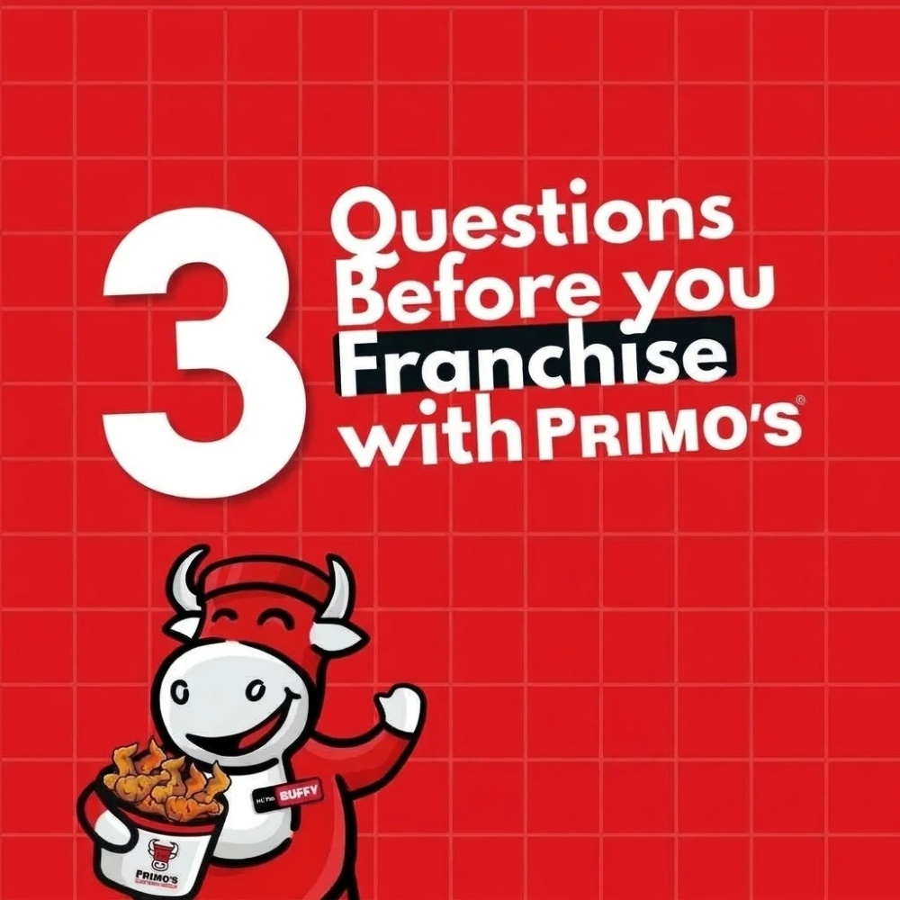
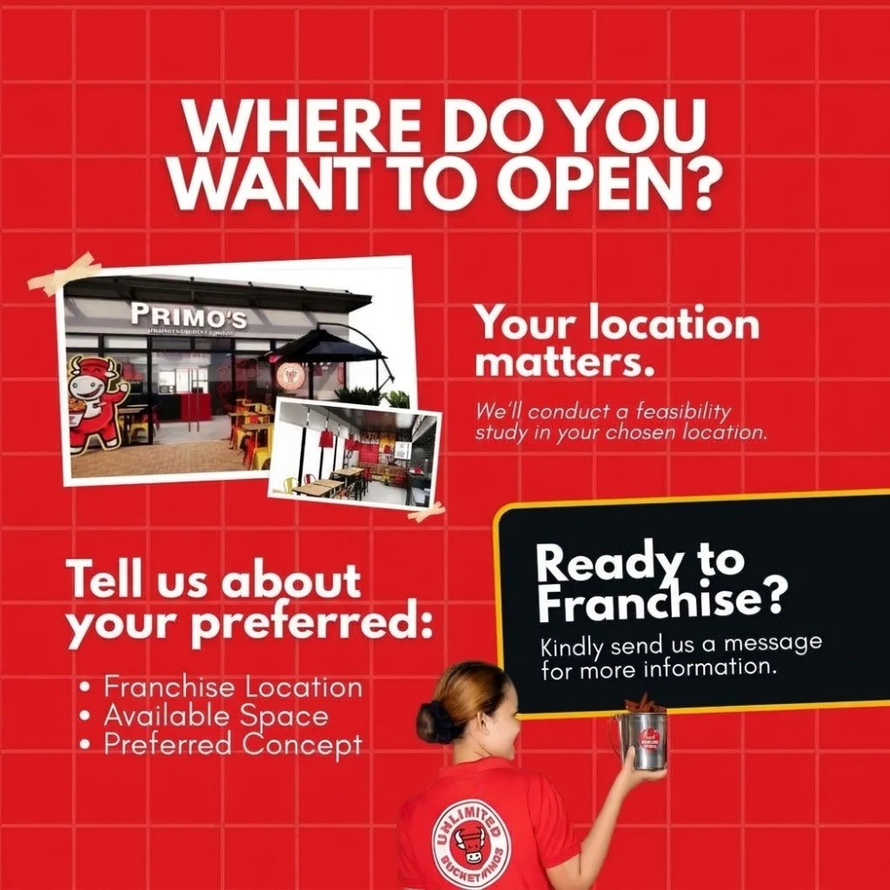

WHY FRANCHISE PRIMO'S?
Primo’s offers a proven P499 and P139 business model that combines high-margin P499 Sulit Unli barkada dining with quick-turnaround P139 Busolve Solo meals. Franchisees benefit from a reliable commissary and sauce supply featuring standardized pre-marinated poultry cuts and all 11 signature glazes delivered directly to guarantee consistent taste. Comprehensive marketing and launch support includes grand opening campaigns, local food-vlogger seeding, social media assets, and delivery app onboarding for GrabFood and foodpanda. Additionally, the brand ensures fast ROI and operations through a streamlined fry-and-toss kitchen workflow that minimizes prep time and labor overhead, targeting a 14 to 20-month payback period.



Ready to open your Primo’s branch?
Reach out to our team using the branch hotlines and operating hours in the footer below.
Next: Footer